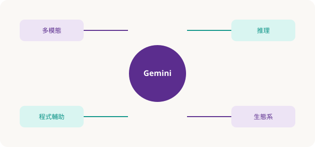

Part 01 · 精準掌握 Gemini
把 Gemini 當「多模態工作夥伴」，不是搜尋框
對照書中 Tip：認識多模態、介面配置、提示詞結構、研究／Artifacts 類產出。重點是任務拆解 + 約束 + 驗收，而不是一次丟超長空泛指令。
Gemini 是什麼（教學摘要）
Google 打造的多能力模型：可同時處理文字、圖片、聲音、影片與程式碼，並深度接上搜尋與 Workspace。課堂上請學員建立心智模型——它擅長草稿、結構、對照、改寫；最終事實與決策仍由人負責。

強項
多模態理解、邏輯推理、程式輔助、生態系整合、快速草稿。
限制
非主流語意可能失準、知識非即時（需搭配搜尋）、無真實情感、可能幻覺與偏見。
介面節奏（Do it! 消化）
- 開啟
gemini.google.com，登入課程指定帳號（訪客模式功能受限）。 - 認識側欄：歷史對話、設定、模型／功能切換；主區為提示與回覆。
- 練習三種輸入：純文字 / 上傳圖或 PDF / 貼程式碼請「解釋＋找風險」。
- 每次回覆後做一句驗收：「來源？可執行？需不需要更短版本？」
不登入也能試網頁版，但通常無法完整保存對話、功能也較陽春——實體課請統一登入策略。
提示詞最小公式
角色 + 任務 + 對象／場域 + 約束（長度、語氣、格式）+ 驗收標準 例：你是科普編輯。把下列筆記改成國中程度 200 字短文， 條列 3 個易錯點，不要發明書中沒有的數據。
- 需要深度調研時，明確要求「列出可點開的來源」並人工抽查。
- 產出簡報大綱、表格、檢查清單時，指定欄位名稱，減少自由發揮。
- 同一任務迭代：先結構 → 再細節 → 再縮短；避免一次要求「完美終稿」。
隨堂測驗 · C1Q1
下列哪一項最能描述 Gemini 的「多模態」？
隨堂測驗 · C1Q2
重要決策引用 AI 內容時，最關鍵的一步是？
隨堂測驗 · C1Q3
較佳的提示詞做法是？
隨堂測驗 · C1Q4
未登入使用網頁版 Gemini 的常見限制是？